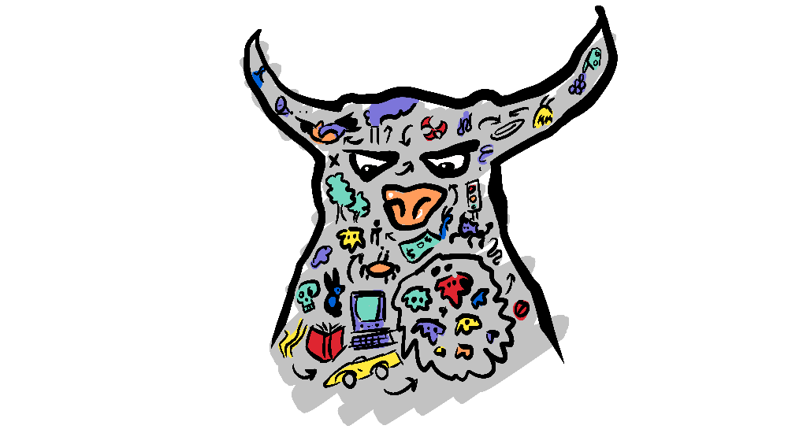

HOW THIS POST CAME ABOUT
When I put a call out for non-zero-sum topics from subscribers, it was my brother who first replied with masculinity—pointing me to the work of author Richard Reeves.
"I think the danger of zero-sum thinking is present ... men are suffering because women are rising. But it's also true—when I try to persuade policymakers to do more stuff about boys and men, they'll say No, no, no, it's women and girls who need help. No, no, they both need help." - Richard Reeves
I had also been listening to Scott Galloway echo many of the same sentiments. This seems to be part of a more healthy discussion around masculinity—a counterpoint to the toxic extremes of the manosphere.

"We've conflated toxicity with masculinity" - Scott Galloway.
This post is far from a comprehensive analysis of the issue, but I have followed the guidance of experts; Reeves, Galloway, and Christina Emba—whose work I recommend for a deeper dive. We will, as always, explore the issue from a non-zero-sum angle—looking for win-wins.
MEN'S... RIGHTS
I have to admit, I haven't previously taken much interest in "men's rights" because of the way the subject has been represented by Men's Rights Activists—simply regurgitating regressive, misogynistic ideologies, while playing victim, simply because they feel they don't have everything their own way any more. But I have now found my attitude to the subject—saying, "Oh, play the world's smallest violin"—may have been misguided.
THE PROBLEMS
There are numerous reasons to rescue masculinity from toxicity, after all, men cause a lot of problems for everyone through anti-social behaviour (this is, by no means, an exhaustive list)
Men are a group that poses risks to society, and yet they are an at-risk group themselves.
Scott Galloway points out that, if this was any other group, we would talk about it in terms of needing better social programs and empathy. But a call for empathy can seem like quite an ask for those who are the victims of male anti-social behaviour. However, as we will explore, empathy is not a reward for bad behaviour but the key to preventing it—that is, when it is adopted by responsible people.
"If responsible people don't address real problems in a straight forward way, irresponsible people are going to exploit them." - Richard Reeves
EMPATHETIC MANFLUENCERS?
When journalist Christina Emba, author of "Rethinking Sex: A Provocation", interviewed young men about what they gain from those she terms 'Manfluencers' such as Jordan Peterson, Joe Rogan and Andrew Tate, she too found the resounding answer was "Empathy".
I am hesitant to put Peterson, Rogan, and Tate in the same category (Manfluencers) because I think they all have very different approaches and effects; Jordan Peterson focuses largely on self-improvement, taking personal responsibility and conservative values, Joe Rogan is a more liberal voice who can at times be very insightful and at other times go bonkers, while Andrew Tate is at the extreme end of the misogynist spectrum.
However, they do share one commonality. Emba points out that ‘Manfluencers’ not only offer empathy to alienated young men but they speak about masculinity in aspirational terms; as a right of passage, a challenge or a summit to be met physically and mentally.
"... and these guys are cheering them on, and that's appealing" - Christina Emba
Emba warns that this vision of masculinity has a significant downside—in that it is often placed in opposition to femininity; from blaming feminism, female agency and women's studies to excusing rape and taking part in sex trafficking.

"What is it exactly about 'Women's Studies' that you believe is fostering revolution?" - Joe Rogan questioning Jordan Peterson
It's a very exclusive, zero-sum conception of masculinity.
IT'S DOESN'T HAVE TO BE A ZERO-SUM GAME
There is zero-sum thinking on both sides, both from the toxic masculinity side and from the mainstream.

"People see it as a zero sum game where, if you feel empathy for men, it must mean that you are anti-women. And so there's a lack of empathy and what I call zero-sum gaming it, you know, Civil Rights didn't hurt white people, it helped them, Gay Marriage doesn't hurt heteronormative marriage, it enhances it. So, to talk about empathy for young men is in no way, and should in no way be seen as, anti-women." - Scott Galloway
BUT CAN WE FOCUS ON EVERYONE?
I actually had some trouble reconciling this idea. Because the question immediately occurred to me—if we focus on men as well as all the traditionally vulnerable groups: minorities, women, the poor, children, the LGBTQ community, aren't we then just focusing on everyone? And therefore not actually focusing on anyone?
But the programs initiated to focus on a particular demographic aren't just one-size-fits-all line items in a government budget that simply give an advantage to that group. Policies that focus on particular demographics do so by helping that demographic deal with their particular struggles. If one demographic is struggling with poverty, then that becomes the focus of their program, if another is struggling with safety, or imprisonment, or rights, or representation then that becomes a focus of their program.
"Let's do ourselves the favour of assuming we can think two thoughts at once" - Richard Reeves
Men's issues can be approached in the same way. Men might not need preferential quotas or scholarships for university, or abortion rights, or greater representation in government. But they might need more exposure to male teachers in primary school, access to apprenticeships or prison reform.

POLICIES FOR MEN CAN BENEFIT ALL
What's more, these programs can benefit everyone. My daughter, for instance, at 10, has her first male teacher—his tone, approach and energy are different, and my daughter is benefiting from that. Greater diversity in primary education is a benefit to all.
There is also the benefit of having well-adjusted men in society, which is essential to a functioning system—because we're a real liability otherwise.
"Women are, I think, ready for more economically and emotionally viable young men. Women are dating older and older, because they're having trouble finding what they would perceive as viable young men." - Scott Galloway

"A world of floundering men is very difficult to imagine as a world of flourishing women, or vice versa and I think that was one of the central insights of the Women's Movement." - Richard Reeves
John Stuart Mill and Harriet Taylor Mill, in their feminist treatise "The Subjection of Women", made the case, to men, that by denying women education, they were condemning themselves to life-long relationships with uneducated wives, who they will find uninteresting. Now we are faced with the opposite situation, with men falling behind academically and retreating to the online world of video games and pornography.
Mill's argument could be reprised today—partners thrive together and if one is addicted, depressed and withdrawn or worse, that's no good for either.

Mill's insight was that for men to be strong doesn't mean women have to be weak. In fact J.S Mill proposed that the inclination to limit women's education resulted from a weakness in men—a fear of being challenged. The fact is, strength begets strength, stronger men and women urge each other on to reach their potential.
"If we want our society to survive and flourish, both sexes have to be doing well." - Christina Emba

COURAGE IS THE SOLUTION
Galloway takes the view that masculinity is a construct made up of different elements, each of which can be positive or negative, and can be adopted by anyone of any gender. He talks about reclaiming the term masculinity with a focus on the positive aspects.
Christina Emba too thinks we need to a positive vision of masculinity but...
"... not one that says Well men, to be non-toxic you need to be more like women." - Christina Emba
Emba's research found that strength, leadership, responsibility, self-mastery and care for others were positive traits that men associated with masculinity. She believes we should shape a pro-social vision of masculinity around these values.

There can be an issue with these traits though. Many have a dark side; strength can be misapplied as aggression, leadership as dominance, and self-mastery as narcissism.
But there is one characteristic that is safeguarded against this dark side. The key characteristic that encapsulates positive pro-social masculinity is courage—let me explain.
RISK-TAKERS
Males are statistically less risk averse, which can make us do crazy things, but also noble, selfless acts. Men are more likely to risk their lives in battle or crisis and, in particular, are more likely to do so for a stranger. These heroic acts of courage are an affirmation of masculinity no amount of lamborghinis or Rolexs can amount to.
But how often are we faced with such a situation; a test of our courage, a demonstration of our bravery?
Barely ever, right?
SURROGATE COURAGE
We can, however, play a gun-toting hulk in a video game, we can floor it in our sports car around a bend, we can posture and pose in front of women, or worse, intimidate them with aggressive behaviour. These actions give some of us a taste of risk-taking, but these risks are empty, they're not courage—courage is risk-taking for what is right.
"Positive masculinity means using traits that feel distinctive to men for the good of others." - Christina Emba

COURAGE TODAY
A courageous act today might be speaking up in a meeting in support of a colleague when it would have been easier not to, or to tell someone how you feel about them—how they hurt you or how they made your day. Courage might be saying "I'm sorry", or perhaps letting go of your self-consciousness long enough to really hear someone else. It could be calling out racism, sexism or homophobia, or it might be stepping in to mediate when an argument gets heated.
These acts are difficult, embarrassing or potentially dangerous but they are courageous, and doing these hard things with consistency will make you feel more like a master of your own will, more of a leader and more masculine, regardless of your gender.
I want my daughter to have this sort of courage, and for any men in her life to have it too (including me).
SO...
There is a problem with men, at present, that is causing problems for everyone. It requires the empathy and the attention of responsible people.
But at the same time, this focus on men need not be at the expense of other groups—in fact, particular measures that will help men, can benefit all.
New voices like Reeves, Galloway and Emba are proposing a non-zero-sum perspective that draws attention to and encourages the positive aspects of masculinity. In doing this, they are exhibiting the very courage we need—to speak up in a difficult conversion and push it in a positive direction.
Opportunities to exhibit courage may be different today, but I think courage is a positive attribute that all men can agree is important to their sense of masculinity. It is also somewhat protected from the extremes because it is, by definition, something we exercise in the interests of others and is therefore pro-social. Courage is non-zero-sum.

I want to thank my brother Nick for his idea to explore masculinity and for his collaboration with this post. It has been heartening to explore the new voices in this space, and makes me hopeful for the future. Love you bro :)